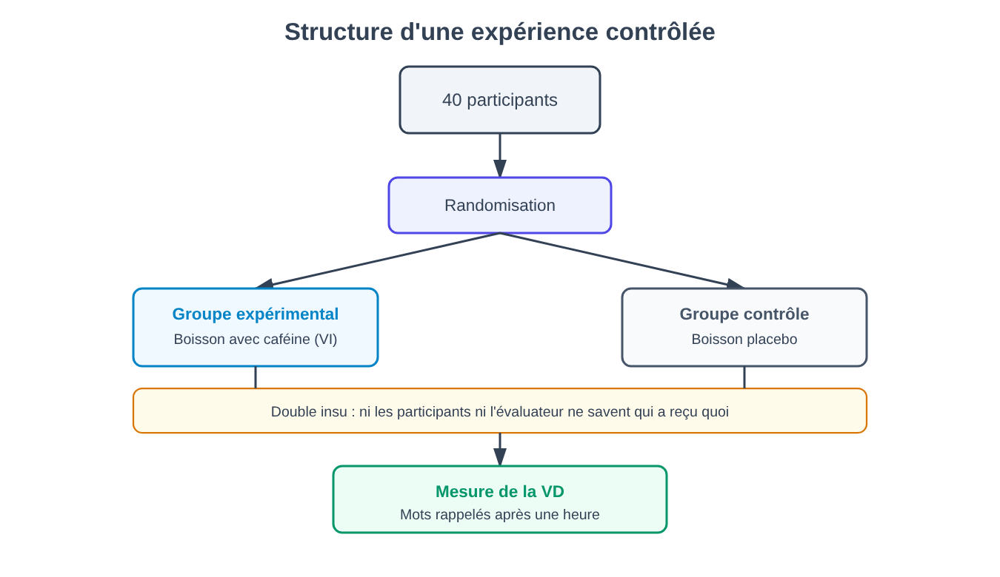
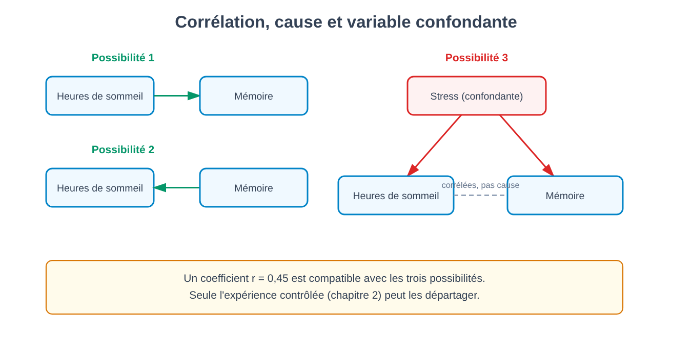
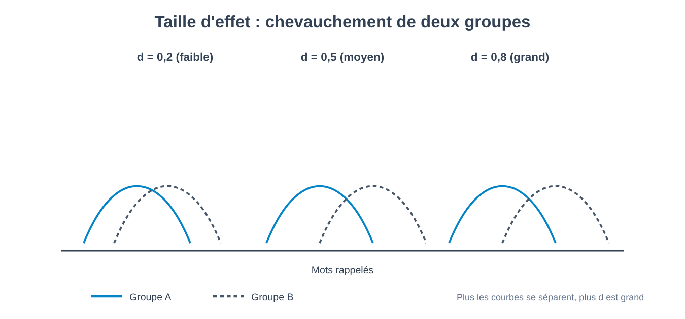
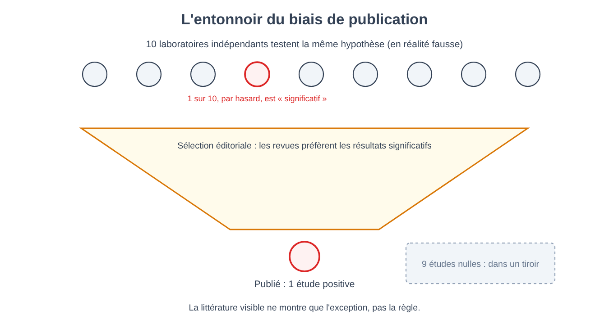

Partie I. Le problème de la connaissance de l'esprit
Chapitre 1 — Pourquoi l'esprit est un objet difficile
[EN DEUX MOTS]
L'esprit ne s'observe pas directement comme on observe une réaction chimique : chez autrui, nous n'en voyons que les effets extérieurs, et le nôtre, nous ne le connaissons que par un compte rendu — l'introspection — dont ce chapitre montre qu'il est moins fiable qu'il n'y paraît. De là naît le problème que le livre entier s'efforce d'aborder : comment faire la science d'un objet qu'aucun instrument ne peut photographier.
Essaie de répondre à une question en apparence simple : pourquoi as-tu choisi, entre deux pulls identiques exposés en vitrine, celui de droite plutôt que celui de gauche ? Une raison te vient probablement tout de suite à l'esprit — la couleur te semblait plus intense, la texture plus douce au toucher. Le problème est que, si les deux pulls étaient réellement identiques, cette raison ne peut pas être la vraie. Et ce qui est intéressant, ce n'est pas que tu te sois trompé : c'est que tu n'as pas eu le sentiment de deviner. L'explication t'a semblé aussi certaine que de voir la couleur même du pull.
Ce chapitre commence par là parce que c'est le premier obstacle que doit affronter quiconque veut étudier scientifiquement l'esprit : l'objet d'étude n'est pas disponible pour l'observation directe, ni pour celui qui l'étudie de l'extérieur ni, comme nous le verrons, pour celui qui le vit de l'intérieur.
Un objet qui ne se voit que par reflet
Lorsqu'un chimiste veut savoir si une réaction produit de la chaleur, il plonge un thermomètre dans la solution. L'instrument et l'objet mesuré sont deux choses distinctes, et le nombre qui s'affiche sur le thermomètre ne dépend pas de ce que le chimiste croit ou désire. Avec l'esprit, cette séparation nette fait défaut des deux côtés.
De l'extérieur, nous ne pouvons observer ni la peur, ni la décision, ni le souvenir d'une autre personne : nous pouvons seulement observer un comportement — une expression du visage, une phrase prononcée, un temps de réaction — et en inférer ce qui se passe « à l'intérieur ». Ce passage de l'observable à l'inféré est appelé en philosophie le problème des autres esprits (problem of other minds) : le fait que le seul accès aux états mentaux d'autrui soit indirect, médiatisé par des signaux qui pourraient, en principe, tromper (une personne peut feindre la tristesse, ou ne pas parvenir à exprimer à quel point elle est réellement triste).
De l'intérieur, la situation n'est pas meilleure, seulement différente. Chacun de nous dispose d'un accès qui semble privilégié à ses propres états mentaux — personne n'a à inférer s'il a mal à la tête, il le sait. Cet accès s'appelle l'introspection (introspection) : l'observation directe, par une personne, de ses propres contenus et processus mentaux. Le problème de l'introspection n'est pas qu'elle soit inaccessible, mais que son produit — le compte rendu que nous en donnons — n'est pas garanti de correspondre au processus réel qui l'a engendré. C'est exactement ce que montre une expérience devenue un classique de la psychologie sociale (Nisbett et Wilson, 1977).
[LE PLAN DE L'EXPÉRIENCE]
Ce que l'on voulait découvrir. Si les personnes, lorsqu'elles expliquent pourquoi elles ont fait un choix, rapportent réellement le processus qui a causé ce choix, ou si elles construisent après coup une explication plausible.
Ce que l'on manipulait. On disposait, en rang sur une table, quatre paires de bas en nylon identiques (dans une variante, quatre chemises de nuit), dans le cadre d'une enquête auprès de consommateurs. La seule différence entre les quatre articles était leur position de gauche à droite — une variable que les participants n'avaient aucune raison de juger pertinente pour apprécier la qualité d'un objet.
Ce que l'on mesurait. Lequel des quatre articles chaque participant désignait comme le meilleur, et — aussitôt après — l'explication verbale qu'il donnait de ce choix.
Ce que l'on maintenait constant. Les articles étaient identiques : aucune différence de qualité réelle ne pouvait justifier une préférence systématique.
Quel résultat aurait infirmé l'hypothèse. Si les choix s'étaient répartis uniformément entre les quatre positions, et si les explications avaient été tout aussi variées, il n'y aurait eu aucune raison de douter de l'exactitude de l'introspection dans ce cas.
Ce qui s'est passé. Les choix ne se sont pas répartis uniformément : l'article situé le plus à droite a été choisi beaucoup plus souvent que les autres — dans la publication originale, près de quatre fois plus souvent que celui placé à l'extrême gauche. Lors des entretiens qui ont suivi, les participants ont fourni avec assurance des raisons concernant la maille, la couleur ou la consistance du tissu. Personne n'a mentionné spontanément la position. Lorsque les chercheurs ont demandé explicitement si la position avait pu influencer le choix, la quasi-totalité des participants l'ont nié.
Le résultat ne dit pas que les gens mentent. Il dit quelque chose de plus inconfortable : que le processus qui produit un choix et le processus qui produit l'explication de ce choix peuvent être deux processus différents, et que le second n'a pas d'accès privilégié au premier — il construit simplement, avec des matériaux plausibles, une histoire qui s'accorde avec le résultat déjà observé. Ce phénomène est appelé confabulation (confabulation) lorsque le compte rendu est construit sur le moment, sur des bases plausibles mais ne correspondant pas au processus réel, et qu'il est produit de bonne foi, sans intention de tromper.
[IDÉE REÇUE]
« Qui mieux que moi peut savoir pourquoi j'ai fait une chose ? » C'est la conviction la plus naturelle qui soit, et c'est précisément pour cela qu'elle est la plus difficile à remettre en question. L'expérience sur la position des articles ne démontre pas que tu ne saches jamais pourquoi tu agis : elle démontre que le sentiment subjectif de savoir n'est pas une garantie, et que ce sentiment est identique, que l'explication soit correcte ou non. Il n'existe, pour celui qui s'introspecte, aucun signal interne qui distingue un souvenir exact de son propre processus mental d'une reconstruction plausible élaborée sur le moment.
Pourquoi la science ne peut pas s'arrêter là
Si le compte rendu que les personnes donnent d'elles-mêmes n'est pas toujours fiable, on pourrait penser que la solution consiste à l'ignorer complètement et à n'étudier que le comportement observable. C'est la voie qu'une tradition entière — le behaviorisme (behaviorism), dont nous parlerons en détail dans la Partie III — a effectivement choisi d'emprunter, en poussant cette démarche jusqu'à ses conséquences extrêmes. Mais avant d'en arriver là, ce livre prend un autre chemin : montrer que l'introspection peu fiable n'est pas la fin de la possibilité d'étudier scientifiquement l'esprit, mais le début du problème méthodologique que le reste de cette Partie s'efforce de résoudre. Si le compte rendu verbal ne suffit pas, que peut-on mesurer d'autre, et comment savoir si cette mesure est valide ? Ce sont les questions des chapitres 2 et 3.
Il existe un second problème, distinct du premier, qu'il vaut la peine d'introduire tout de suite : même lorsque le compte rendu est sincère et non confabulé, l'acte même d'observer son propre esprit peut le modifier. Demander à une personne de prêter attention à ce qu'elle ressent altère, en général, dans une certaine mesure ce qu'elle ressent — un phénomène connu de façon générale sous le nom de réactivité de la mesure (measurement reactivity), que nous retrouverons à plusieurs reprises dans le livre, par exemple à propos des questionnaires sur l'humeur (chapitre 48) et d'autres études où la mesure altère ce qu'elle mesure. En chimie, le thermomètre n'altère pas de façon significative la température de la solution ; en psychologie, l'instrument de mesure le plus courant — demander à la personne de rendre compte — peut faire partie du phénomène que l'on veut mesurer.
[MINI-CHRONOLOGIE]
Le problème de savoir comment étudier l'esprit de façon systématique, et pas seulement par la voie philosophique, commence à recevoir une réponse institutionnelle à la fin du XIXe siècle, avec la naissance des premiers laboratoires dédiés — nous verrons au chapitre 7 comment l'introspection elle-même a été, pendant un certain temps, transformée en une méthode entraînée et standardisée, avec des résultats néanmoins controversés.
Pourquoi « faire appel au bon sens » ne suffit pas
Une objection naturelle se présente à ce stade : si l'introspection ne suffit pas, ne peut-on pas simplement observer attentivement les gens et en tirer des conclusions raisonnables, sans tout l'appareil de l'expérimentation ? La question est légitime, et la réponse — que nous développons au chapitre 2 — est que l'observation non guidée par un plan contrôlé est systématiquement exposée à des explications qui semblent raisonnables et sont fausses, exactement comme le sont les fausses explications introspectives de l'expérience que l'on vient de voir. Le bon sens n'est pas moins sujet à construire des histoires plausibles a posteriori que ne l'est l'introspection : c'est, en un sens, de l'introspection appliquée à un échantillon d'observations plutôt qu'à un unique événement intérieur. La méthode expérimentale naît précisément comme un rempart contre cette tendance.
[L'ESSENTIEL DU CHAPITRE]
• L'esprit n'est pas directement observable : de l'extérieur, on n'observe que le comportement, dont on infère des états mentaux ; de l'intérieur, on observe par l'introspection, dont le compte rendu n'est pas garanti de correspondre au processus réel.
• L'expérience sur la position des articles montre la confabulation : une explication erronée peut être ressentie avec la même certitude qu'une explication correcte.
• L'acte d'introspection peut modifier ce qu'il observe (réactivité de la mesure), un second problème distinct de la confabulation.
• Ces problèmes ne ferment pas la possibilité d'une science de l'esprit : ils l'ouvrent, en posant la question du chapitre 2 — comment construire une mesure sans devoir se fier uniquement au compte rendu subjectif.
Chapitre 2 — Qu'est-ce qu'une expérience
[EN DEUX MOTS]
Une expérience est une manière de poser une question à la réalité si spécifique que la réalité est contrainte de répondre d'une façon qui permet de distinguer une hypothèse vraie d'une hypothèse fausse. Ce chapitre construit de zéro, avec un exemple inventé et transparent, le vocabulaire — variable indépendante, variable dépendante, groupe contrôle, randomisation, insu — qui soutient le reste du livre.
Imagine que tu veuilles répondre à une question anodine : boire un café avant d'étudier aide-t-il à mieux mémoriser ? La façon la plus naturelle de l'examiner, pour la plupart des gens, est d'observer : demander à ceux qui boivent habituellement du café s'ils se souviennent mieux de ce qu'ils étudient après en avoir bu, ou comparer ses propres notes les jours où l'on en a bu et ceux où l'on n'en a pas bu. Le problème de cette approche n'est pas qu'elle soit stupide — c'est que, aussi précise soit-elle, elle ne peut jamais répondre à la question qui intéresse réellement, parce que celui qui boit du café avant d'étudier diffère de celui qui n'en boit pas de bien d'autres manières : peut-être étudie-t-il à des heures différentes, a-t-il des habitudes de sommeil différentes, se sent-il plus motivé ces jours-là. Chacune de ces différences pourrait être la vraie cause d'une éventuelle différence de résultats, et l'observation seule ne permet pas de les isoler.
L'expérience naît précisément pour résoudre ce problème, et il est utile de la construire pas à pas sur un cas entièrement inventé, justement parce que, étant inventé, aucun détail ne cache de complications réelles.
La structure minimale
Imaginons de prendre 40 personnes qui doivent étudier une liste de 30 mots, et de les répartir en deux groupes de 20. Au premier groupe, nous donnons une tasse de café normal avant d'étudier ; au second, une tasse de boisson identique par l'aspect et par le goût, mais sans caféine (une boisson placebo, du latin « je plairai » : une substance dépourvue d'ingrédient actif, mais indiscernable de celui-ci pour qui la prend). Au bout d'une heure, nous testons combien de mots chaque personne se rappelle.
Dans ce plan minimal apparaissent déjà les éléments que nous utiliserons dans chaque chapitre du livre :
- La variable indépendante (independent variable) — souvent abrégée VI — est ce que l'expérimentateur manipule directement : ici, la présence ou l'absence de caféine dans la boisson. Elle est « indépendante » parce que sa valeur ne dépend de rien d'autre dans l'expérience : elle est décidée par celui qui conduit l'expérience, qui l'attribue aux participants.
- La variable dépendante (dependent variable) — VD — est ce que l'on mesure comme effet possible de la manipulation : ici, le nombre de mots rappelés. On la dit « dépendante » parce que l'hypothèse en jeu est que sa valeur dépende, au moins en partie, de la variable indépendante.
- Le groupe qui reçoit la boisson placebo s'appelle groupe contrôle (control group) : il sert de terme de comparaison, pour savoir quel aurait été le résultat sans la manipulation. Le groupe qui reçoit la caféine est le groupe expérimental.
Pourquoi faut-il un groupe contrôle, au lieu de donner du vrai café à tout le monde et de voir combien de mots ils se rappellent ? Parce que, sans terme de comparaison, nous ne saurions pas si un résultat de, disons, 18 mots rappelés sur 30 est élevé ou faible : ce pourrait être le nombre que n'importe qui se rappellerait de toute façon, avec ou sans caféine.
Pourquoi il ne suffit pas de répartir les groupes au hasard « à l'œil »
L'étape suivante, et la plus facile à sous-estimer, est la manière de décider qui va dans le groupe expérimental et qui va dans le groupe contrôle. Si l'expérimentateur affectait à la caféine les personnes qui semblent les plus motivées, ou les plus jeunes, ou arrivées les premières, il introduirait entre les deux groupes une différence systématique qui n'a rien à voir avec la caféine — et qui pourrait à elle seule expliquer une éventuelle différence de résultats. La solution est la randomisation (randomization) : affecter chaque participant à l'un ou l'autre groupe par un procédé aléatoire (un lancer de pièce, un générateur de nombres aléatoires), de sorte que, en moyenne, les autres caractéristiques des personnes — âge, motivation, quantité de sommeil de la nuit précédente — se répartissent de façon similaire entre les deux groupes, et que la seule différence systématique restante soit celle voulue : qui a reçu de la caféine et qui n'en a pas reçu.
[ATTENTION AU SAUT LOGIQUE]
La randomisation ne garantit pas que les deux groupes soient identiques en tout — avec 20 personnes par groupe, par pur hasard, un groupe pourrait quand même compter quelques personnes plus motivées que l'autre. La randomisation garantit quelque chose de plus modeste mais suffisant : qu'aucune caractéristique ne soit systématiquement orientée vers un groupe plutôt que vers l'autre, et que la probabilité de déséquilibres importants diminue à mesure que l'échantillon est grand. C'est pour cela que la taille de l'échantillon compte, un thème que nous reprenons au chapitre 4 à propos de la puissance statistique.
Le problème des attentes : l'insu
Il reste une dernière source de distorsion que le plan décrit jusqu'ici n'élimine pas encore. Si les participants savent qu'ils ont bu du vrai café, ils pourraient se sentir plus éveillés et se concentrer davantage pour cette seule raison — non par un effet biochimique de la caféine sur la mémoire, mais par un effet psychologique lié à l'attente de mieux réussir. Et c'est pourquoi la boisson du groupe contrôle doit être indiscernable de la vraie : si aucun participant ne sait dans quel groupe il se trouve, l'expérience est en simple insu (single-blind).
Mais il existe encore un second canal de distorsion : si l'expérimentateur qui teste la mémoire sait qui a bu du vrai café, il pourrait — même involontairement, sans aucune intention de fausser les données — accorder plus de temps, encourager davantage, ou interpréter une réponse ambiguë de façon plus généreuse avec les participants dont il attend un meilleur résultat. C'est pourquoi, dans l'expérience idéale, même celui qui administre le test et recueille les données ignore à quel groupe appartient chaque participant : c'est le double insu (double-blind), la norme la plus rigoureuse, dans laquelle ni le participant ni l'expérimentateur en contact direct avec lui ne connaissent l'affectation aux groupes tant que les données ne sont pas recueillies.

[QUESTION CONTROVERSÉE]
Le double insu est plus facile à obtenir pour un médicament (une pilule est indiscernable d'une autre) que pour beaucoup d'interventions psychologiques : il est difficile de maintenir un participant à l'insu du fait d'avoir reçu, par exemple, une séance de thérapie plutôt qu'aucun traitement — il le sait forcément. Cette limite concernera directement l'évaluation des essais cliniques, abordée au chapitre 76 : une grande partie de la recherche sur les interventions psychologiques doit composer avec un insu seulement partiel, et il faut en tenir compte dans l'interprétation des résultats.
Que se passe-t-il si le résultat est celui qui était prévu
Supposons que le groupe avec la caféine se rappelle en moyenne plus de mots que le groupe contrôle. Ce résultat, à lui seul, permet-il de dire que la caféine cause une amélioration de la mémoire dans cette tâche ? Oui, et c'est la caractéristique qui rend l'expérience différente de toute observation, aussi précise soit-elle : puisque les deux groupes ont été rendus équivalents en moyenne (grâce à la randomisation) sauf pour la variable manipulée, et puisque l'insu écarte l'effet des attentes, la seule explication plausible restante pour une différence de résultats est la variable indépendante elle-même. C'est cela — et non une intuition plus forte ou un échantillon plus nombreux — qui confère à l'expérience contrôlée la capacité, qu'aucun autre plan ne possède au même degré, de soutenir des affirmations causales. Nous reviendrons sur une exception importante à cette capacité au chapitre 4, quand nous parlerons de corrélation et de causalité dans les plans non expérimentaux, et au chapitre 6, quand nous verrons des situations où une véritable expérience n'est pas possible ou pas éthique.
[L'ESSENTIEL DU CHAPITRE]
• Une expérience manipule une variable indépendante et mesure l'effet sur une variable dépendante, en maintenant tout le reste aussi constant que possible.
• Le groupe contrôle fournit le terme de comparaison sans lequel un résultat ne peut pas être interprété.
• La randomisation répartit de façon aléatoire entre les groupes les autres différences entre les participants, isolant ainsi la variable d'intérêt.
• L'insu (simple ou double) élimine la possibilité que les attentes des participants ou des expérimentateurs, et non la manipulation elle-même, produisent le résultat observé.
• C'est seulement lorsque tous ces éléments sont réunis qu'une expérience peut soutenir une affirmation causale — non une corrélation, mais une cause.
Chapitre 3 — Mesurer l'invisible : les construits
[EN DEUX MOTS]
« Intelligence », « anxiété », « motivation » ne sont pas des choses que l'on puisse toucher : ce sont des construits, des catégories que la psychologie invente pour organiser des configurations de comportement, et qu'il faut ensuite transformer en procédures de mesure concrètes. Ce chapitre montre pourquoi ce passage — du concept abstrait au nombre mesuré — est plus exigeant qu'il n'y paraît, et comment on évalue si une mesure est bonne.
« Quel est ton degré d'intelligence ? » est une question qui ne semble avoir un sens que parce que nous sommes habitués à l'entendre. Mais demande-toi : l'intelligence est-elle une chose qui existe indépendamment de la façon dont nous la mesurons, comme la longueur d'une table existe indépendamment du mètre qu'on utilise pour la mesurer ? Ou est-elle, au moins en partie, définie par la manière dont nous choisissons de la mesurer ? La réponse à cette question change radicalement ce que signifie dire qu'un test est « exact ».
Construits et opérationnalisation
En psychologie, on appelle construit (construct) une entité théorique, non directement observable, introduite pour expliquer des régularités de comportement — l'intelligence, l'anxiété, la motivation, l'attachement sont tous des construits. Un construit n'est ni vrai ni faux en soi : il est utile ou inutile selon la mesure dans laquelle il aide à prévoir et à organiser des observations. Pour pouvoir l'étudier, cependant, il faut le traduire en une procédure de mesure concrète et reproductible — un processus appelé opérationnalisation (operationalization) : la définition d'un construit par les opérations spécifiques utilisées pour le mesurer (par exemple, l'« intelligence » opérationnalisée comme « score obtenu à un certain test en un certain temps »).
Le point délicat est que le même mot du quotidien — « intelligence », « stress », « bonheur » — peut être opérationnalisé de façons différentes et non équivalentes, et que le choix d'opérationnalisation n'est pas neutre : il change ce que l'on mesure, de fait. Deux chercheurs qui disent tous deux mesurer « l'anxiété » pourraient en réalité mesurer deux choses en partie différentes — l'un le rythme cardiaque pendant une tâche stressante, l'autre les réponses à un questionnaire sur les pensées anxieuses — et trouver des résultats différents non pas parce que l'un se trompe, mais parce qu'ils regardent des aspects différents du même construit.
[IDÉE REÇUE]
« Si un test mesure l'intelligence, alors l'intelligence est ce que le test mesure » est une boutade qui circule depuis longtemps dans les milieux universitaires, souvent présentée comme un raccourci de définition. En réalité, elle cache une erreur : elle renverse le problème au lieu de le résoudre. La tâche de la psychologie n'est pas d'accepter n'importe quelle procédure de mesure comme définition automatiquement correcte du construit, mais de vérifier si cette procédure saisit réellement le construit qu'elle prétend mesurer — et c'est exactement le problème de la validité, le prochain sujet de ce chapitre.
Les principales formes de validité
Dire qu'une mesure est valide (valid) signifie qu'elle mesure effectivement le construit qu'elle déclare mesurer, et non autre chose. Ce n'est pas une propriété unique : la psychologie distingue au moins trois formes principales de validité (de construit, interne, externe), la validité écologique étant un cas particulier de la validité externe ; chacune peut être présente sans les autres.
La validité de construit (construct validity) concerne la question de savoir si la mesure saisit réellement le construit théorique d'intérêt. Elle s'évalue de manière indirecte, en vérifiant si le score se comporte comme la théorie prévoit qu'il doit se comporter : un test d'anxiété devrait, par exemple, être corrélé avec d'autres mesures d'anxiété (validité convergente) et peu corrélé avec des mesures de construits distincts, comme la mémoire (validité discriminante).
La validité interne (internal validity), déjà rencontrée implicitement au chapitre 2, concerne la question de savoir si un plan de recherche donné permet réellement de conclure que la variable indépendante a causé le changement observé dans la variable dépendante, en excluant d'autres explications.
La validité externe (external validity) concerne la question de savoir si un résultat obtenu dans un certain contexte (un certain échantillon, un certain laboratoire, une certaine culture) se généralise à d'autres contextes, d'autres personnes, d'autres moments.
La validité écologique (ecological validity), cas particulier de la validité externe, concerne spécifiquement la question de savoir si un résultat obtenu dans des conditions de laboratoire, souvent artificielles, s'applique aussi aux situations de la vie réelle — une question qui reviendra souvent, par exemple à propos des expériences de laboratoire sur la mémoire (chapitre 34) et sur l'obéissance (chapitre 68).
Une expérience peut avoir une validité interne élevée (dans le contexte contrôlé où elle a été menée, le résultat est solide) et une validité externe faible (il ne se généralise pas en dehors de ce contexte précis) : ce sont des dimensions indépendantes, et un bon plan de recherche doit déclarer explicitement sur laquelle d'entre elles il formule une affirmation.
Fidélité : la validité ne suffit pas
Une seconde exigence, distincte de la validité, est la fidélité (reliability) : la cohérence d'une mesure, c'est-à-dire la mesure dans laquelle elle produit des résultats similaires lorsqu'elle est répétée dans les mêmes conditions. Une balance qui indique un poids différent chaque fois que tu montes dessus, alors que ton poids réel reste identique, n'est pas fidèle — et par conséquent ne peut pas non plus être valide, parce qu'un nombre qui change au hasard ne peut rien mesurer avec exactitude. La fidélité est donc une condition nécessaire mais non suffisante de la validité : une balance qui affiche toujours 10 kg de plus que le poids réel est parfaitement fidèle (elle donne toujours le même nombre) mais non valide (ce nombre n'est pas le poids correct).
On distingue en général deux types de fidélité : la fidélité test-retest (test-retest reliability), la cohérence des scores d'une même personne mesurée à deux moments différents rapprochés dans le temps, lorsqu'on n'attend pas de changement réel du construit ; et la cohérence interne (internal consistency), la mesure dans laquelle les différentes questions d'un même questionnaire, conçues pour mesurer le même construit, tendent à donner des réponses cohérentes entre elles chez une même personne.
[LE PLAN DE L'EXPÉRIENCE]
Comment on estime concrètement la fidélité test-retest. On fait passer le même test aux mêmes personnes à deux occasions espacées (par exemple de deux semaines), assez proches pour exclure un changement réel du trait mesuré, mais assez éloignées pour réduire l'effet du simple souvenir des réponses données la première fois. On calcule ensuite la corrélation entre les scores obtenus aux deux occasions (le coefficient de corrélation est présenté en détail au chapitre 4) : plus la valeur s'approche de 1, plus la mesure est stable dans le temps. Une valeur faible ne dit pas nécessairement que le test est mauvais — elle pourrait aussi indiquer que le construit mesuré change naturellement vite — mais elle impose de distinguer les deux possibilités avant de se fier au score comme à un trait stable de la personne.
Pourquoi « mesurer l'intelligence » est une affirmation exigeante
Revenons à la question d'ouverture. Dire qu'un test mesure « l'intelligence » implique, tacitement, trois affirmations distinctes, chacune vérifiable et chacune, en principe, falsifiable : que le score soit fidèle (stable s'il est répété) ; qu'il soit corrélé avec d'autres mesures indépendantes que la théorie relie à l'intelligence (par exemple les résultats scolaires, la capacité de résoudre des problèmes nouveaux) ; et qu'il ne soit pas simplement le reflet d'autre chose — par exemple la familiarité culturelle avec le type de questions posées, ou la rapidité avec laquelle on est habitué à travailler sous le chronomètre. Comme nous le verrons au chapitre 64, chacune de ces trois affirmations a fait l'objet de recherches sérieuses, et aucune des trois n'est aussi évidente que l'usage quotidien du mot « intelligence » le laisserait croire.
[L'ESSENTIEL DU CHAPITRE]
• Un construit est une entité théorique non directement observable ; pour l'étudier, il faut le traduire en une procédure de mesure concrète par l'opérationnalisation.
• La validité (de construit, interne, externe, écologique) concerne la question de savoir si une mesure saisit réellement ce qu'elle déclare mesurer ; ce sont des dimensions distinctes et indépendantes entre elles.
• La fidélité (test-retest, cohérence interne) concerne la cohérence de la mesure, et elle est nécessaire mais non suffisante pour la validité.
• Dire qu'un test « mesure » un construit complexe comme l'intelligence est une affirmation empiriquement vérifiable, non une définition à tenir pour acquise.
Chapitre 4 — La statistique minimale indispensable
[EN DEUX MOTS]
Ce chapitre présente, de zéro et avec des exemples numériques concrets, les outils statistiques que le reste du livre utilisera avec naturel : moyenne et variabilité, corrélation (et pourquoi elle n'implique pas la causalité), taille d'effet, valeur-p et ce qu'elle ne signifie pas, puissance statistique, intervalle de confiance. Il n'y a pas un seul symbole qui ne soit expliqué ici.
Les nombres, à eux seuls, ne disent rien : deux groupes qui se rappellent en moyenne 18 et 20 mots sur 30 (exemple du chapitre 2) sont-ils « réellement » différents, ou cette différence de deux mots pourrait-elle être apparue par pur hasard, avec un autre échantillon de personnes ? Répondre à cette question est la tâche de la statistique, et il suffit pour cela de quelques outils, expliqués un à un.
Décrire un ensemble de nombres : moyenne et variabilité
La moyenne (mean) d'un ensemble de nombres est leur somme divisée par leur effectif — la façon la plus courante de résumer la « valeur typique » d'un groupe. Mais la moyenne seule cache une information importante : dans quelle mesure les valeurs individuelles s'en écartent. Deux groupes peuvent avoir la même moyenne de mots rappelés, mais dans l'un tout le monde se rappelle un nombre similaire de mots, tandis que dans l'autre certains en rappellent énormément et d'autres très peu. Cette dispersion se mesure par l'écart type (standard deviation), indiqué par le symbole ET ou, dans la notation internationale, SD : une mesure de la distance moyenne entre chaque valeur individuelle et la moyenne du groupe.
[FORMULE]
ET = √( Σ(xᵢ − x̄)² / (n − 1) )
Où :
• xᵢ — la valeur de chaque observation (par exemple, le nombre de mots rappelés par la i-ème personne)
• x̄ — la moyenne du groupe
• n — le nombre d'observations dans le groupe
• Σ — le symbole de sommation : il additionne le terme qui suit pour toutes les observations, de 1 à n
Ce que cela signifie en termes simples : pour chaque personne, on calcule de combien son score s'écarte de la moyenne du groupe (xᵢ − x̄) ; on élève cet écart au carré (pour éliminer les signes négatifs et éviter que les écarts positifs et négatifs s'annulent mutuellement dans la somme) ; on additionne tous les écarts au carré ; on divise par le nombre d'observations moins un ; enfin on extrait la racine carrée pour revenir à l'unité de mesure d'origine (des mots, et non des « mots au carré »).
Exemple de calcul : dans un groupe de 4 personnes qui se rappellent respectivement 16, 18, 20, 22 mots, la moyenne est 19. Les écarts sont −3, −1, 1, 3 ; au carré : 9, 1, 1, 9 ; la somme est 20 ; divisée par (4−1)=3, elle donne 6,67 ; la racine carrée est d'environ 2,58. L'écart type de ce groupe est donc d'environ 2,58 mots.
Corrélation : quand deux choses varient ensemble
Beaucoup de questions en psychologie ne concernent pas une expérience contrôlée, mais la question de savoir si deux variables mesurées telles qu'elles se présentent dans la réalité — sans en manipuler aucune — tendent à varier ensemble. Par exemple : les personnes qui dorment davantage tendent-elles aussi à mieux se souvenir ? Cette relation se mesure par le coefficient de corrélation (correlation coefficient), indiqué par la lettre r, un nombre compris entre −1 et +1 qui décrit à quel point deux variables varient ensemble de façon étroite, et dans quelle direction.
[FORMULE]
r = Σ[(xᵢ − x̄)(yᵢ − ȳ)] / √[Σ(xᵢ − x̄)² · Σ(yᵢ − ȳ)²]
Où :
• xᵢ, yᵢ — les valeurs des deux variables pour chaque personne (par exemple, heures de sommeil et mots rappelés)
• x̄, ȳ — les moyennes respectivement de la variable x et de la variable y
• Σ — sommation sur toutes les personnes de l'échantillon
Ce que cela signifie en termes simples : le numérateur devient grand et positif lorsque les personnes qui se situent au-dessus de la moyenne dans une variable se situent aussi au-dessus de la moyenne dans l'autre (et inversement pour celles qui se situent en dessous) ; le dénominateur sert seulement à « normaliser » le résultat, de sorte que r tombe toujours entre −1 et +1, indépendamment de l'unité de mesure des variables d'origine. Un r proche de +1 indique que les deux variables croissent ensemble de façon presque parfaitement linéaire ; un r proche de −1 indique que lorsque l'une croît l'autre tend à diminuer ; un r proche de 0 indique l'absence de relation linéaire.
Exemple de calcul : cinq personnes dorment 5, 6, 7, 8 et 9 heures et se rappellent respectivement 14, 18, 16, 22 et 20 mots. Les moyennes sont 7 heures et 18 mots. Les écarts à la moyenne sont −2, −1, 0, +1, +2 pour le sommeil et −4, 0, −2, +4, +2 pour les mots ; leurs produits sont 8, 0, 0, 4, 4, de somme 16. La somme des carrés des écarts est 10 pour le sommeil et 40 pour les mots. Donc r = 16 / √(10 · 40) = 16 / 20 = 0,80 — une relation positive forte, mais non parfaite.
[ATTENTION AU SAUT LOGIQUE]
Trouver que r = 0,45 entre heures de sommeil et mots rappelés n'autorise pas à conclure que dormir davantage cause une meilleure mémoire. Le contraire pourrait être vrai (celui qui a une mémoire plus efficace se sent peut-être moins fatigué et dort mieux), ou bien les deux variables pourraient dépendre d'une troisième cause commune non mesurée — par exemple un niveau général de stress, qui réduit à la fois le sommeil et la capacité de se concentrer pendant l'étude. Cette troisième cause cachée s'appelle une variable de confusion (confounding variable). C'est la raison pour laquelle, comme on l'a vu au chapitre 2, seule l'expérience contrôlée — et non la corrélation — peut soutenir une affirmation causale : la corrélation seule reste compatible avec plusieurs explications causales contradictoires entre elles.

La valeur-p : une question précise, souvent mal comprise
Revenons à la question d'ouverture : la différence de deux mots rappelés entre le groupe caféine et le groupe placebo (chapitre 2) pourrait-elle être apparue par pur hasard ? La valeur-p (p-value) s'efforce de répondre à une version précise de cette question : en supposant que, dans la réalité, la caféine n'ait aucun effet (cette supposition de départ s'appelle l'hypothèse nulle, null hypothesis), quelle est la probabilité d'observer, par le seul effet du hasard de l'échantillonnage, une différence au moins aussi grande que celle observée (ou plus grande) ?
Une valeur-p basse (conventionnellement, inférieure à 0,05, soit 5 %) signifie qu'un résultat aussi marqué serait rare si l'hypothèse nulle était vraie — et, par convention, lorsque cela se produit, on dit que le résultat est statistiquement significatif (statistically significant), et l'on tend à rejeter l'hypothèse nulle au profit de l'hypothèse selon laquelle la manipulation a eu un effet réel.
[IDÉE REÇUE]
« Une valeur-p de 0,03 signifie qu'il y a 97 % de probabilité que l'effet soit réel. » C'est l'une des interprétations les plus répandues de la valeur-p, et elle est fausse. La valeur-p ne dit rien sur la probabilité que l'hypothèse (que l'effet soit réel) soit vraie : elle dit seulement à quel point des données aussi extrêmes que celles observées, ou plus extrêmes, seraient rares, si l'hypothèse nulle était vraie. Ce sont deux questions différentes — la première concerne la probabilité de l'hypothèse étant donné les données, la seconde la probabilité des données étant donné l'hypothèse nulle — et les confondre est l'une des erreurs les plus courantes, et les plus lourdes de conséquences, dans la lecture de la recherche psychologique. Une valeur-p basse ne mesure pas non plus la grandeur ou l'importance d'un effet : elle mesure seulement à quel point il serait improbable de l'obtenir par pur hasard, ce qui est une chose différente, comme le montre le paragraphe suivant.
Taille de l'effet : combien, et pas seulement si
Un résultat peut être statistiquement significatif (improbable par pur hasard) et être en même temps trop petit pour avoir la moindre pertinence pratique — cela arrive typiquement avec de très grands échantillons, où même des différences minuscules deviennent difficiles à attribuer au hasard. C'est pourquoi, à côté de la valeur-p, on rapporte toujours la taille de l'effet (effect size) : une mesure de l'ampleur d'une différence ou d'une relation, indépendamment du nombre de personnes mesurées. L'une des mesures les plus courantes pour comparer deux groupes est le d de Cohen.
[FORMULE]
d = (x̄₁ − x̄₂) / ET_commun
Où :
• x̄₁, x̄₂ — les moyennes des deux groupes comparés (par exemple, groupe caféine et groupe placebo)
• ET_commun — une moyenne pondérée des écarts types des deux groupes, qui résume la variabilité interne des deux
Ce que cela signifie en termes simples : d exprime la différence entre les deux moyennes non pas en unités d'origine (des mots), mais en unités d'écart type — c'est-à-dire combien de « crans » de dispersion typique séparent les deux moyennes. Par convention approximative, un d d'environ 0,2 est considéré comme un petit effet, d'environ 0,5 comme un effet moyen, d'environ 0,8 ou plus comme un grand effet — mais ces valeurs de référence doivent toujours être lues dans le contexte spécifique du phénomène étudié, et non comme des seuils absolus.
Exemple de calcul : si le groupe caféine se rappelle en moyenne 20 mots et le groupe placebo 18, avec un écart type commun de 4 mots, alors d = (20 − 18) / 4 = 0,5 — un effet de taille moyenne.

Puissance statistique : la capacité de trouver un effet qui existe réellement
Un dernier concept, moins intuitif mais essentiel pour comprendre pourquoi certaines expériences échouent à trouver des effets réels, est la puissance statistique (statistical power) : la probabilité qu'une étude, si l'effet qu'elle cherche existe réellement et a une certaine taille, parvienne à le détecter comme statistiquement significatif. Une étude avec peu de participants a en général une faible puissance : même si l'effet est réel, l'échantillon pourrait ne pas être assez grand pour le distinguer de façon fiable du bruit du hasard, et l'étude conclut — à tort — qu'il n'y a aucun effet. Ce type d'erreur, manquer un effet qui existe réellement, s'appelle erreur de seconde espèce (Type II error), distincte de l'erreur de première espèce (Type I error) : conclure qu'un effet existe alors qu'en réalité il n'y en a pas (c'est-à-dire, en pratique, obtenir une valeur-p basse par pur hasard).
La puissance dépend de quatre facteurs : la taille de l'échantillon (plus de personnes, plus de puissance), la taille réelle de l'effet recherché (les grands effets sont plus faciles à détecter que les petits), le seuil de signification choisi et la variabilité des données (des mesures plus bruitées, moins de puissance). Une étude avec peu de participants qui cherche un petit effet est presque condamnée, avant même de commencer, à ne pas le trouver même s'il existe — un problème que nous retrouverons au cœur du chapitre 5, quand nous parlerons de la manière dont la faible puissance a contribué à la crise de la réplicabilité.
Intervalle de confiance : quel degré d'incertitude sur l'estimation
Un dernier chiffre, de plus en plus souvent rapporté à côté de la valeur-p et de la taille de l'effet, est l'intervalle de confiance (confidence interval), typiquement à 95 % : un intervalle de valeurs plausibles pour la vraie taille de l'effet dans la population, calculé de telle sorte que, si l'on répétait l'étude de nombreuses fois avec des échantillons différents, 95 % des intervalles ainsi calculés contiendraient la vraie valeur. Un intervalle très large (par exemple, un effet estimé qui pourrait se situer n'importe où entre presque zéro et très grand) signale une estimation peu précise, même lorsque le point central paraît prometteur — une information que la seule valeur-p ne transmet pas.
[L'ESSENTIEL DU CHAPITRE]
• La moyenne et l'écart type résument, respectivement, la valeur typique et la dispersion d'un ensemble de données.
• La corrélation (r) mesure si, et dans quelle mesure, deux variables varient ensemble, mais ne permet pas à elle seule de conclusions causales : la possibilité d'une variable de confusion reste toujours ouverte.
• La valeur-p indique à quel point un résultat serait rare si l'hypothèse nulle était vraie — non la probabilité que l'hypothèse d'intérêt soit vraie, un malentendu parmi les plus courants et les plus lourds de conséquences.
• La taille de l'effet (par exemple le d de Cohen) mesure l'ampleur d'une différence, indépendamment de la signification statistique.
• La puissance statistique est la capacité d'une étude à détecter un effet réel ; une faible puissance produit des faux négatifs (erreur de seconde espèce).
• L'intervalle de confiance indique la précision d'une estimation, une information complémentaire de la valeur-p.
Chapitre 5 — Comment un résultat peut être faux tout en étant vrai
[EN DEUX MOTS]
Une étude peut être menée honnêtement, franchir le seuil de signification, être publiée dans une revue prestigieuse — et n'être pourtant qu'un faux positif. Ce chapitre explique comment cela peut se produire de façon systématique, non par fraude, mais en raison de la manière dont la recherche scientifique a été historiquement incitée, et présente la plus grande tentative jamais menée de mesurer la fréquence avec laquelle les résultats de la psychologie se répètent.
Si tu as suivi le chapitre 4, tu pourrais penser qu'une valeur-p inférieure à 0,05, obtenue dans une expérience bien conçue, est une garantie suffisamment solide. Ce chapitre montre pourquoi elle ne l'est pas toujours, même lorsque personne n'a triché : le problème naît de la façon dont sont prises, souvent sans même qu'on s'en rende compte, des décisions sur la manière d'analyser les données.
Le problème des multiples manières de regarder les mêmes données
Imagine avoir mesuré, dans l'expérience sur la caféine du chapitre 2, non seulement le nombre de mots rappelés après une heure, mais aussi après deux heures, et non seulement le nombre total de mots, mais aussi combien d'entre eux ont été rappelés dans le bon ordre, et peut-être même la vitesse à laquelle les participants les ont écrits. Avec quatre ou cinq mesures différentes au lieu d'une seule, et peut-être quelques manières alternatives d'exclure ou d'inclure des participants « aberrants », le nombre d'analyses possibles sur les mêmes données croît très rapidement. Le problème est que, par pure définition de la valeur-p, si l'on effectue vingt analyses différentes sur des données qui ne contiennent en réalité aucun effet, on s'attend quand même, en moyenne, à ce qu'environ une de ces vingt se révèle significative par pur hasard (puisque le seuil conventionnel est fixé à 5 %, soit 1 sur 20).
Cette liberté — souvent exercée de bonne foi, en essayant simplement différentes approches jusqu'à ce que l'une « fonctionne » — s'appelle les degrés de liberté du chercheur (researcher degrees of freedom) : l'ensemble des choix, apparemment raisonnables pris un à un, qu'un chercheur peut faire pendant le recueil et l'analyse des données (quelles mesures rapporter, quand arrêter le recueil des données, quels participants exclure, quelles analyses statistiques utiliser), chacun augmentant la probabilité de tomber, tôt ou tard, sur un résultat significatif par pur hasard. Lorsque cette liberté est exploitée — même inconsciemment — pour chercher un résultat significatif après avoir vu les données, on parle de pêche aux données (p-hacking) : la pratique consistant à essayer différentes analyses jusqu'à ce que l'une se révèle significative, sans déclarer les autres tentées.
[ATTENTION AU SAUT LOGIQUE]
La pêche aux données ne requiert aucune intention frauduleuse. Un chercheur qui, de bonne foi, essaie d'analyser les données de trois manières différentes parce que la première « n'a pas fonctionné », pour ensuite ne rapporter que la troisième comme si elle avait été la seule prévue, a quand même gonflé la probabilité d'un faux positif — même si chaque choix, pris isolément, lui paraissait raisonnable.
Le problème de ce qui n'est jamais publié
Un second mécanisme, indépendant du premier, concerne ce qui finit effectivement par être publié. Pendant longtemps, les revues scientifiques ont préféré publier des résultats positifs (un effet trouvé) plutôt que des résultats nuls (aucun effet trouvé) — une étude qui confirme une hypothèse intéressante est perçue comme plus « importante » qu'une étude qui ne trouve rien. Cette tendance systématique s'appelle le biais de publication (publication bias) : la tendance des revues à publier de façon disproportionnée des résultats statistiquement significatifs par rapport aux résultats nuls, à qualité de plan égale.
L'effet cumulatif est insidieux : si dix laboratoires indépendants testent la même hypothèse fausse, chacun a 1 chance sur 20 d'obtenir par pur hasard un résultat significatif, et la probabilité qu'au moins l'un des dix en obtienne un est d'environ 40 % (1 moins 0,95 à la puissance dix). Si seul ce laboratoire publie, tandis que les neuf qui n'ont rien trouvé laissent leur étude dans un tiroir, la littérature scientifique visible montrera une seule étude, positive, sans aucune trace des neuf tentatives infructueuses qui la contredisent.

[LE PLAN DE L'EXPÉRIENCE]
Le projet. Reproducibility Project: Psychology, mené par l'Open Science Collaboration (2015).
Ce que l'on voulait découvrir. À quelle fréquence les résultats publiés dans les principales revues de psychologie se répètent lorsque la même expérience est menée à nouveau, par un autre laboratoire, avec le même protocole.
Ce qui a été fait. Un consortium d'environ 270 chercheurs a sélectionné 100 études publiées dans trois revues de psychologie de premier plan, et a tenté de répliquer chacune en suivant, lorsque c'était possible, le même protocole expérimental que l'étude originale — souvent avec la collaboration des auteurs originaux eux-mêmes, pour s'assurer que la procédure était réellement équivalente.
Ce que l'on mesurait. Si, dans la réplication, l'effet se révélait encore statistiquement significatif dans la même direction, et quelle était la taille de l'effet trouvée dans la réplication par rapport à celle de l'étude originale.
Quel résultat aurait atténué l'inquiétude sur la réplicabilité. Si la grande majorité des réplications avaient confirmé les études originales avec des tailles d'effet comparables, l'inquiétude concernant la fragilité systématique des résultats publiés aurait été relativisée.
Ce qui s'est passé. Sur les 97 réplications d'études ayant rapporté dans l'original un effet significatif, seules 36 % ont de nouveau obtenu un résultat statistiquement significatif. Dans l'ensemble des réplications, en outre, la taille de l'effet mesurée était en moyenne environ la moitié de celle rapportée dans l'étude originale (un coefficient de corrélation moyen de 0,20 contre 0,40). Le taux de réussite variait beaucoup selon le domaine : plus élevé pour la psychologie cognitive (environ la moitié des études répliquées), plus bas pour la psychologie sociale (environ un quart).
Un projet ultérieur (Many Labs 2, publié en 2018, faisant partie d'une série de projets Many Labs commencée en 2014), qui a mobilisé plus de 60 laboratoires dans le monde entier pour tenter de répliquer 28 effets, classiques et récents, a trouvé une configuration à certains égards encore plus instructive : lorsqu'un effet se répliquait, il tendait à se répliquer de façon cohérente dans la plupart des laboratoires impliqués ; lorsqu'il échouait, il échouait de façon tout aussi cohérente partout. Cela suggère que le problème, dans bien des cas, n'est pas que l'effet dépende de façon subtile du contexte culturel ou du laboratoire particulier — une hypothèse souvent invoquée pour expliquer les échecs de réplication — mais plus simplement que l'effet original, dans ces cas, n'avait jamais été aussi solide qu'il avait été publié.
[TIENT-ON ENCORE ?]
Le projet de réplication décrit ici (communément désigné par le sigle OSC, du nom du consortium qui l'a mené) reste, des années plus tard, la référence quantitative la plus citée sur la crise de la réplicabilité en psychologie, et ses principaux chiffres ont été largement confirmés par d'autres projets à grande échelle, même si certains auteurs en ont discuté l'interprétation (en particulier la part des 36 % qui dépend de différences entre les conditions de réplication et les conditions originales). Reste en revanche débattu le poids à attribuer, cas par cas, aux différentes causes possibles d'un échec de réplication : pêche aux données dans l'étude originale, puissance statistique insuffisante dans la réplication, ou différences réelles de contexte entre l'étude originale et sa répétition. Distinguer ces possibilités requiert, le plus souvent, une analyse au cas par cas — il n'existe pas de diagnostic automatique applicable de la même façon à toutes les études échouées.
Un problème d'échantillon, et pas seulement d'analyse
Un dernier facteur, distinct des précédents mais qui les aggrave, concerne les personnes que l'on étudie typiquement. Une grande part de la recherche psychologique historique a été menée sur des étudiants universitaires de pays occidentaux, riches, instruits et industrialisés — un échantillon résumé par l'acronyme WEIRD (Western, Educated, Industrialized, Rich, Democratic), qui en anglais signifie aussi, non par hasard, « bizarre ». Un résultat obtenu presque exclusivement sur ce type d'échantillon peut ne pas se généraliser (problème de validité externe, chapitre 3) à des populations ayant des habitudes cognitives, sociales ou éducatives différentes — une limite silencieuse qui s'ajoute, sans la remplacer, à la fragilité statistique qui vient d'être décrite.
Les contre-mesures adoptées par la discipline
La réponse de la psychologie à ces problèmes, au cours des quinze dernières années, s'est concentrée sur des changements de pratique concrets, que nous retrouverons à plusieurs reprises dans le livre. Le préenregistrement (preregistration) consiste à déclarer publiquement, avant de recueillir les données, quelles hypothèses sont testées et quelles analyses seront menées — un engagement qui réduit drastiquement la marge de manœuvre pour la pêche aux données décrite plus haut, parce que tout écart par rapport au plan déclaré devient visible. Une forme plus stricte encore est celle des rapports enregistrés (registered reports) : un format éditorial dans lequel une revue s'engage à publier une étude sur la base de la qualité de son plan, évaluée avant même que les données soient recueillies — éliminant ainsi, à la racine, le biais de publication fondé sur le résultat, puisque la décision de publier ne dépend plus de l'issue.
[L'ESSENTIEL DU CHAPITRE]
• Les degrés de liberté du chercheur et la pêche aux données peuvent produire des résultats significatifs par pur hasard, même sans aucune intention frauduleuse.
• Le biais de publication déforme systématiquement la littérature visible en faveur des résultats positifs, en cachant les tentatives infructueuses.
• Le grand projet de réplication décrit ici a trouvé que seuls 36 % de 97 résultats initialement significatifs se sont répliqués, avec des tailles d'effet en moyenne à peu près divisées par deux dans l'ensemble des réplications.
• Des échantillons composés presque uniquement de populations WEIRD ajoutent un problème distinct de généralisabilité.
• Le préenregistrement et les rapports enregistrés sont les principales contre-mesures adoptées par la discipline, et nous en tiendrons compte chapitre après chapitre avec l'encadré [TIENT-ON ENCORE ?].
Chapitre 6 — Les autres manières de savoir
[EN DEUX MOTS]
L'expérience contrôlée du chapitre 2 n'est pas toujours possible : parfois pour des raisons éthiques (on ne peut pas affecter un traumatisme au hasard), parfois pour des raisons pratiques (on ne peut pas randomiser l'âge d'une personne). Ce chapitre présente les autres plans de recherche — longitudinaux, sur jumeaux, sur cas unique, méta-analyses, modèles computationnels — que la psychologie utilise lorsque l'expérience n'est pas une option, ainsi que les limites propres à chacun.
Toutes les questions intéressantes ne se laissent pas enfermer dans une expérience comme celle du chapitre 2. Aucun comité d'éthique ne permettrait d'assigner au hasard, à un groupe d'enfants, une enfance marquée par la pauvreté pour voir l'effet sur le développement cognitif ; et aucun expérimentateur ne peut randomiser le fait qu'une personne ait 20 ou 70 ans. Et pourtant la psychologie du développement (Partie IX) et la psychologie du vieillissement produisent des connaissances solides sur des questions comme celles-ci. Comment ?
Études longitudinales et transversales
Une étude longitudinale (longitudinal study) suit le même groupe de personnes dans le temps, en les mesurant de façon répétée à des mois ou des années d'intervalle, pour observer comment elles changent. Une étude transversale (cross-sectional study), plus rapide à mener, mesure en revanche des groupes différents de personnes d'âges différents en un seul moment, et compare les groupes entre eux comme s'ils représentaient des points différents d'une même trajectoire de développement.
Les deux plans peuvent donner des réponses différentes à la même question, et la raison en est instructive. Si une étude transversale compare un groupe de personnes de 70 ans à un groupe de personnes de 30 ans sur la mémoire, et met en évidence que les personnes de 70 ans se souviennent moins bien, cela pourrait refléter réellement un effet du vieillissement — ou bien refléter un effet de cohorte (cohort effect) : le fait que les personnes de 70 ans d'aujourd'hui ont reçu, il y a des décennies, une instruction en moyenne différente de celle des personnes de 30 ans d'aujourd'hui, pour des raisons historiques qui n'ont rien à voir avec le vieillissement en soi. Une étude longitudinale, en suivant les mêmes personnes de 30 à 70 ans, n'a pas ce problème — mais elle en a d'autres : elle demande des décennies, et elle est exposée à la perte progressive de participants qui abandonnent l'étude, souvent de façon non aléatoire (ceux dont la santé est moins bonne, par exemple, pourraient avoir plus de probabilité de se retirer, faussant l'échantillon restant).
Études sur jumeaux : séparer nature et milieu sans expérimenter
Pour estimer dans quelle mesure les différences observables entre les personnes dans un trait — l'intelligence, un trait de personnalité — dépendent de facteurs génétiques plutôt que de facteurs environnementaux, la psychologie ne peut évidemment pas assigner au hasard le patrimoine génétique d'une personne. L'étude sur jumeaux (twin study) exploite en revanche une différence naturelle déjà présente dans la population : les jumeaux monozygotes partagent 100 % du matériel génétique, tandis que les jumeaux dizygotes en partagent en moyenne 50 %, comme des frères et sœurs ordinaires nés à des moments différents. En comparant à quel point les jumeaux monozygotes se ressemblent dans un trait par rapport à la ressemblance des dizygotes, et en supposant que les deux types de jumeaux partagent un environnement familial également semblable, on peut estimer la part de variabilité de ce trait attribuable à des facteurs génétiques — une méthode que nous reprendrons en détail au chapitre 27, avec les hypothèses qui la rendent plus fragile qu'elle ne le paraît au premier abord.
Le cas unique : quand un seul patient enseigne quelque chose
L'étude de cas unique (single-case study) documente en profondeur une seule personne, typiquement un patient présentant une lésion cérébrale rare ou une condition inhabituelle. Un cas unique ne peut pas, à lui seul, soutenir une généralisation (un seul patient n'est pas un échantillon), mais il peut faire quelque chose qu'aucune expérience à grande échelle ne peut faire aussi bien : démontrer qu'une certaine capacité et une autre sont dissociables — c'est-à-dire qu'elles peuvent être altérées indépendamment l'une de l'autre, ce qui est un indice qu'elles dépendent de mécanismes au moins en partie distincts (un indice qui devient fort lorsqu'on observe aussi la dissociation inverse chez un autre patient : la double dissociation, que nous rencontrerons au chapitre 24). Nous en verrons une application directe au chapitre 40, à propos des amnésies et de ce qu'elles ont appris sur la structure de la mémoire.
Méta-analyses : additionner de nombreuses petites études en une estimation plus solide
Puisque, comme on l'a vu au chapitre 4, une étude unique avec peu de participants peut avoir une puissance statistique insuffisante pour détecter un effet réel, un outil de plus en plus central dans la psychologie contemporaine est la méta-analyse (meta-analysis) : une procédure statistique qui combine les résultats de nombreuses études indépendantes sur la même question, pour produire une estimation globale de la taille de l'effet, plus précise que celle de chaque étude prise isolément. Une méta-analyse bien menée peut repérer le biais de publication discuté au chapitre 5, au moyen de techniques qui permettent d'estimer si des études nulles, jamais publiées, pourraient manquer au tableau d'ensemble ; elle ne l'élimine pas, et une méta-analyse d'études déjà biaisées hérite du biais.
Modèles computationnels : simuler pour comprendre le mécanisme
Une approche plus récente, répandue surtout dans l'étude de la perception, de l'attention et de la décision, consiste à construire un modèle computationnel (computational model) : un programme qui met en œuvre explicitement une hypothèse sur le fonctionnement d'un processus mental, et en génère des prédictions quantitatives à comparer avec le comportement humain réel. La valeur de cette approche ne tient pas à ce qu'elle remplace l'expérience, mais à ce qu'elle contraint une théorie psychologique — souvent décrite en mots de façon vague — à devenir assez précise pour produire un nombre vérifiable, et non seulement une direction qualitative de l'effet.
[MINI-CHRONOLOGIE]
Aucune de ces méthodes ne remplace l'expérience contrôlée du chapitre 2 lorsque l'expérience est possible : elles la complètent dans les cas, fréquents en psychologie, où elle ne l'est pas. Dans les chapitres suivants, le type de plan utilisé dans chaque expérience citée sera toujours déclaré explicitement, afin que l'on sache toujours clairement quel genre de conclusion — causale, corrélationnelle, descriptive — ce plan précis permet de tirer.
[L'ESSENTIEL DU CHAPITRE]
• Les études longitudinales suivent les mêmes personnes dans le temps ; les études transversales comparent des groupes d'âges différents en un seul moment, et exposent au risque de confondre vieillissement et effets de cohorte.
• Les études sur jumeaux estiment la contribution génétique à un trait en comparant la ressemblance entre monozygotes et dizygotes, sans qu'il soit nécessaire de manipuler expérimentalement la génétique.
• Le cas unique ne généralise pas, mais peut démontrer que deux capacités sont dissociables.
• La méta-analyse combine de nombreuses études pour obtenir des estimations plus précises et pour signaler, sans l'éliminer, le biais de publication.
• Les modèles computationnels contraignent une théorie à faire des prédictions quantitatives précises, vérifiables par rapport au comportement réel.
• Aucun de ces plans ne remplace l'expérience lorsque l'expérience est éthiquement et pratiquement possible : il l'accompagne lorsqu'elle ne l'est pas.